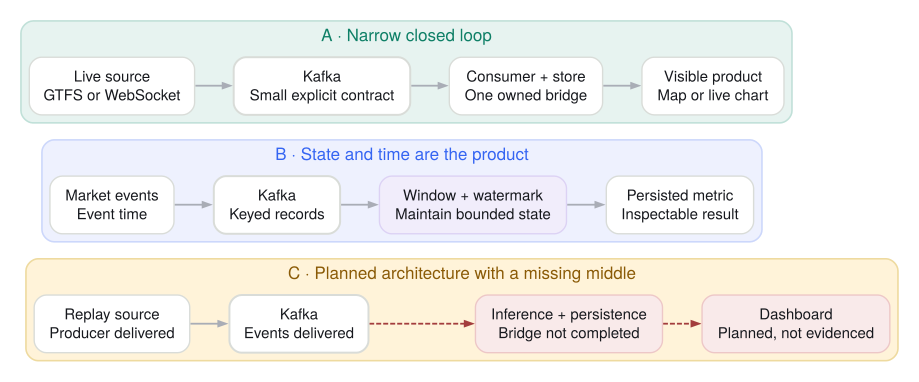

Concrete product thinking
- Real or believable event source
- Kafka producer and downstream consumer
- Visible database, table, dashboard, or web output
- Architecture tied to a recognizable user problem
MSDS 682 · Lecture 8 · Part 1
Start with one architecture contract, then use seven reviewed 2023 projects as evidence about closed loops, stateful products, and scope.
Proposal scope gate

The cohort in one page
| Project | Event source | Kafka-era processing | Output |
|---|---|---|---|
| BART transit service | GTFS-Realtime feed | Avro producer → consumer → DynamoDB | FastAPI site + live map |
| SF 311 analytics | Socrata API via daily Airflow | Avro producer → PostgreSQL path | Streamlit + resolution-time model |
| Market anomaly detection | Finnhub WebSocket | Event-time window + watermark + model | Delta table + Databricks charts |
| Music behavior analytics | Eventsim synthetic events | Kafka → Spark → GCS → hourly warehouse load | BigQuery + dashboard |
| Bitcoin anomaly system | Historical blockchain Parquet | Planned online inference and MongoDB path | Model/API/UI modules; core consumer incomplete |
| NYC taxi operations | S3 historical Parquet replay | Avro producer → ksqlDB aggregates | Database/dashboard remained planned |
| TSLA live chart | Finnhub WebSocket | Python producer + consumer | Streamlit price/volume chart |
Three architecture patterns

Not every source was truly live
| Pattern | 2023 examples | What students should say |
|---|---|---|
| Live external events | BART GTFS-RT; Finnhub market feeds | Near-real-time or real-time source, with the polling/WebSocket boundary stated |
| Synthetic event stream | Music behavior Eventsim | Simulated events used to test a streaming system |
| Historical replay | NYC taxi and blockchain Parquet | Batch data replayed as events—not a live source |
| Scheduled batch through Kafka | Daily SF 311 ingestion | Batch ingestion plus Kafka transport, not continuous source generation |
Across the cohort
Review every proposal the same way
Part 1 takeaway